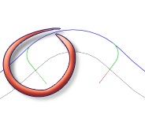

<div id="doLeadOut"><p>Consente di generare uno svincolo in uscita.</p>
<table class="tipTable" cellspacing="10">
<tr>
<td><center></center></td>
</tr><tr>
<td><center><p><b>Svincolo in uscita</b></p></center></td>
</tr></table>
</div>